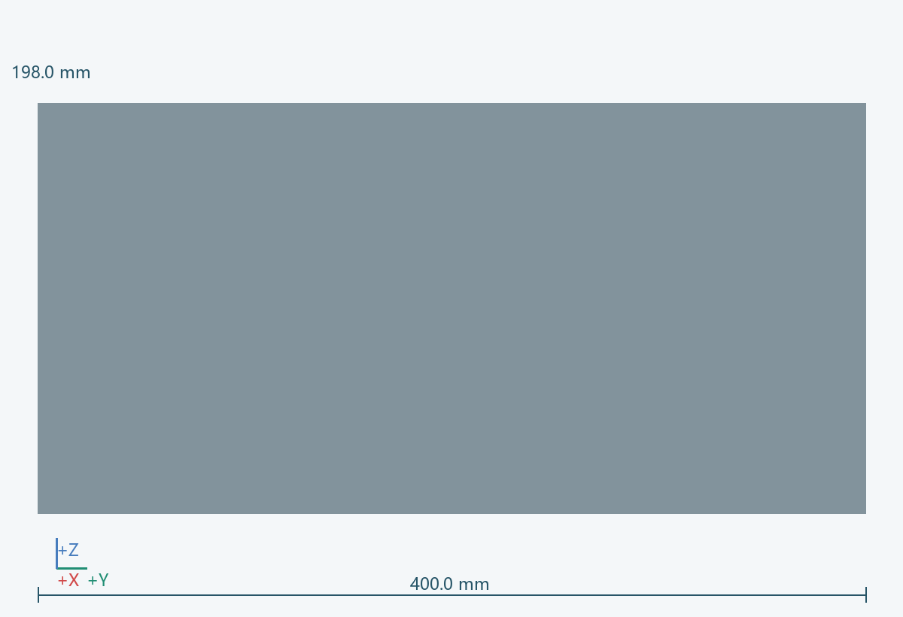
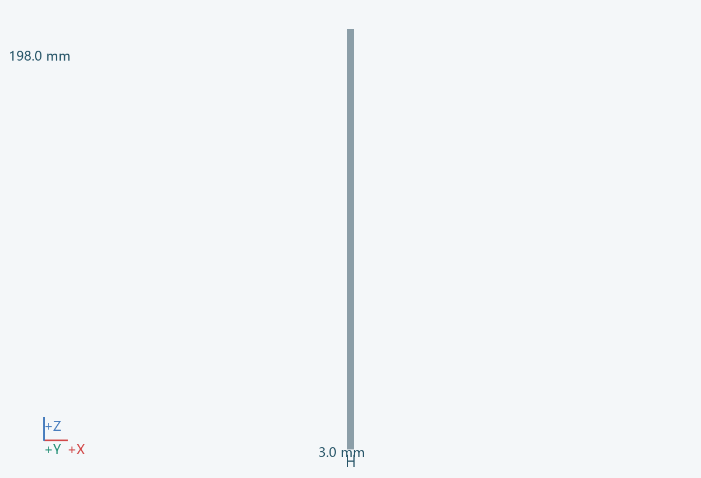

几何包络
3.0 × 400.0 × 198.0 mm（含所示实例）
功能
保护控制与电源模块，并提供散热和维修路径。
连接 / 基准
接 0101；舱内 0507/0901/0902/0903 分区布置。
材料 / 工艺
钣金或阻燃材料外罩，试装件可低速打印
拆装
向后拆门，保持插头拔出空间。
待验证
防护等级、散热能力和材料等级尚未确认；电源输入方案由电气选型确定。 关联：U07/U09
实例
PRT-0803-B


3.0 × 400.0 × 198.0 mm（含所示实例）
保护控制与电源模块，并提供散热和维修路径。
接 0101；舱内 0507/0901/0902/0903 分区布置。
钣金或阻燃材料外罩，试装件可低速打印
向后拆门，保持插头拔出空间。
防护等级、散热能力和材料等级尚未确认；电源输入方案由电气选型确定。 关联：U07/U09
PRT-0803-B